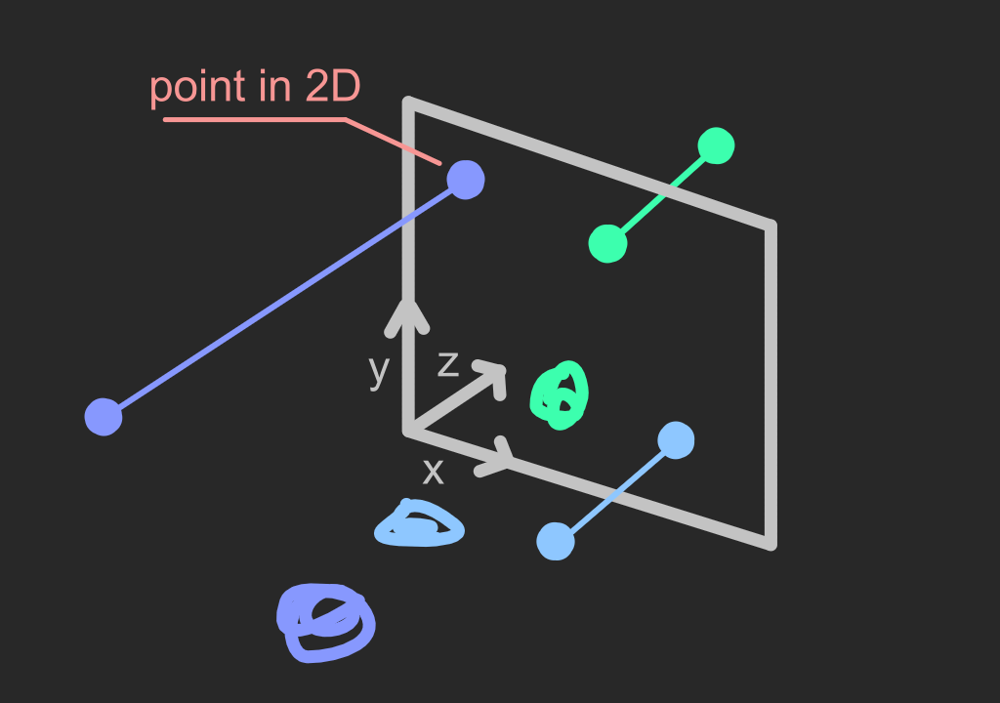
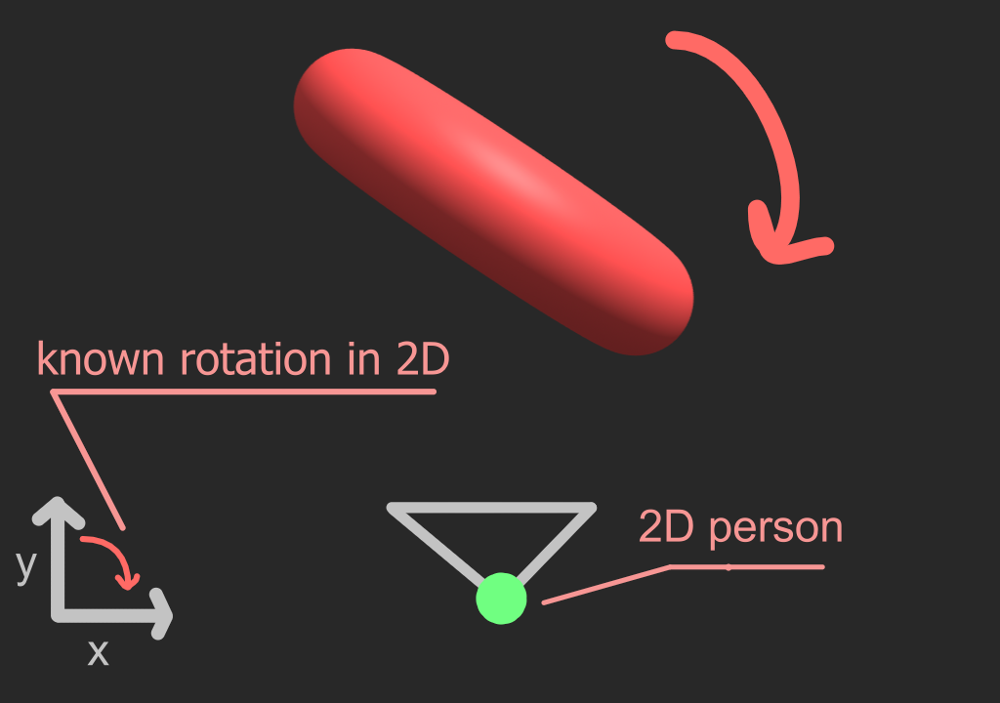
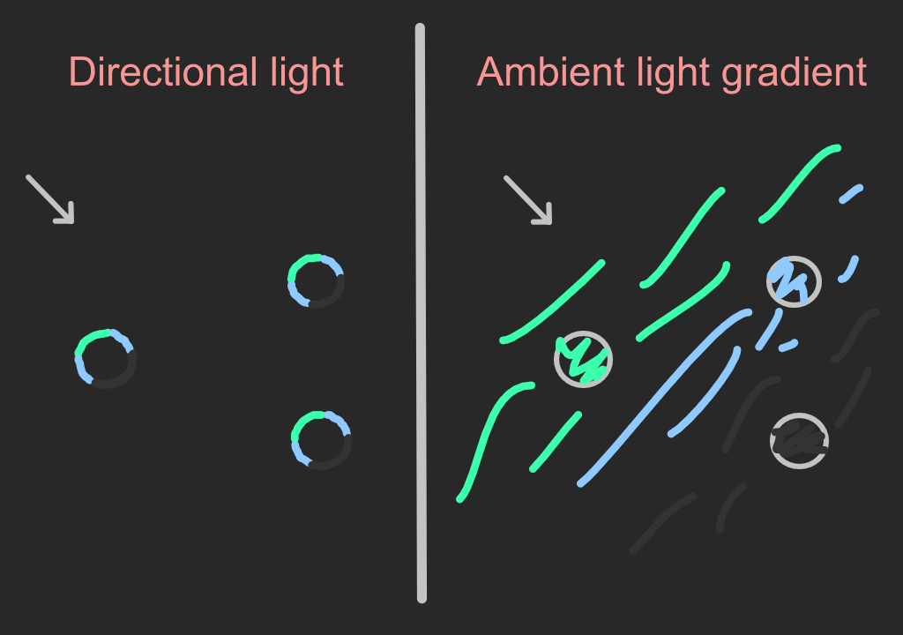

Hello, I am Tucan.
In this course I will be explaining some ways of how to
think about 4D and then explain rotations of a 4D object that kinda looks like a donut. There will be a lot of interactive stuff so look forward to that.
Intuition is all you'll need.
Also please download
this application.
(source code)
It contains several scenes that will be useful in our explanation.
You can continue without the app if you want to.
There will be screenshots of the scenes, but they won't be interactive.
1. What are we going to see?
Before we look at 4D and try understanding it, we need to know what are we going to be seeing and how.
To answer that, first let's look at what person in 1D would see.
Person in 1D would see 1 piece of information or 0D.
Now let's look what happens in 2D. (use slider to move the points around)
As we saw above person in 2D would see a line or section of 1D.
Let's continue to 3D.
In 3D we see section of 2D. As shown on the image, by projecting onto 2D surface we get rid of z coordinates.
Now let's look what would a person in 4D see.
Every time we had person in some dimension what he saw was section of lower dimension.
For example we live in 3D but see 2D. Similarly, a person in 4D would see 3D.
But we can't see 3D space like person in 4D.
For us, we need to project again, 3D => 2D.
Then we can see 2D section that we end up with.
Let me give you example of projecting twice. 3D => 2D => 1D
Now, let's move onto our case 4D => 3D => 2D.
We'll ignore 4D person for less confusion.
By projecting twice we get something that we can see.
2. Visualizing w axis using color
Before we do w axis let's try visualizing z axis with color in 2D.
To do that we can use heightmaps. In heightmaps color is used to indicate height.
Below we have 3D surface on the left and its heightmap on the right.
Using only black and white can be problematic with negative values.
By using more colors we can get more information from looking at heightmaps.
Let's use blue and green.

We can also use this to visualize the w axis.
3. Creating 4D object
Now it's going to start getting exciting.
4D object that we're going to create is in some ways similar to donut.
That's why we will look at how to create a donut first.
We can create a donut by rotating circle around a line.
Below is how it would look in 2D visualized by color.
Note that object below is only half donut. (sigle color per circle used for simplicity)
As we saw above 2D person would see a circle that's getting squashed and its color changes.
We're going to create our 4D object similarly but use spheres instead and rotate into the 4th dimension.
Before that let's look at what we need to do basic rotations.
All we need for basic rotation are 2 variables forming a plane.
Its nicely demonstrated on the image below.
Now we can start creating our 4D object.
Were going to do something similar to making a donut from circle.
But instead of circles were going to use spheres, and rotate into 4D using rotation with x and w.
Explore 3D scene that's illustrating half of the rotation. (signle color per sphere used for simplicity)
Now let's go back to normal donut.
What would a person in 2D see when we project the donut.
We count that the donut was created using method above and not manipulated yet.
When person that's in 2D saw that projected donut,
it looked something like rectangle with rounded corners.
Because we created our 4D object using similar method we can use this.
If this scales nicely, we should see something like cuboid (stretched cube) with rounded corners.
Please open the desktop app mentioned at the begging.
Then click on the button shown below to run projection of 4D object. (in app)
As we saw, it looked like cuboid with rounded corners.
4. Exploring 4D object
There are a lot of confusing things that can happen when we rotate higher dimensional objects.
So to get a little less confused we're going to look at rotations and their behavior first.
Below is table with dimensions and rotations that become possible in that dimension.
Now let's split rotations into known and unknown.
Known rotations will be those that exist in our dimension.
And unknown rotations will be those that are in higher dimensions.
The number of unknown rotations will always be infinite like the number of higher dimensions.
For example, if we're in 2D we have 1 known rotation.
Using known rotations on higher dimensional objects doesn't change the behavior of known rotations.
For example, if we're in 2D and use known rotation on 3D donut it would rotate like we would expect.

Also in the first scene that we used app to run were only known rotations inplace.
That's why you haven't seen any unusual motion.
To create higher dimensional objects in some dimension we used unknown rotations.
Let's look again at where we used them.
Now we will use these unknown rotations to rotate the objects.
We're going to start with normal donut.
For person in 2D it looks as if the points are cycling through the object.
Next we're going to do the same with our 4D object.
Click the button shown below. (in app)
Another thing we can do is use reverse rendering.
Here, that means seeing whats furthest away first.
This way we can see more useful information.
Let's start with rendering normal 3D donut with reverse.
Click the button shown below. (in app)
Using reverse we could see the backside and partially see front side as well when they overlapped.
Next were going to use reverse with our 4D object.
Click the button shown below. (in app)
Next we'll change lighting.
Instead of normal lighting we can use ambient light gradients (alg).
With them we can get better sense of distance.
Image below is showing difference between directional lighting and alg.

Actually alg that's used in the app is a little different to improve performance.
But it still looks similar enough.
Now we'll try alg with 3D donut.
Click the button shown below. (in app)
Let's continue with our 4D object.
Click the button shown below. (in app)
There's one more thing we will do in this explanation.
We never combined known and unknown rotations together with our 4D object.
Because of that we never got to see all states of our 4D object.
To access all rotated states of 4D object we need 3 angles.
Below image illustrates this.
Now, let's try it with our 4D object.
Click the button shown below. (in app)